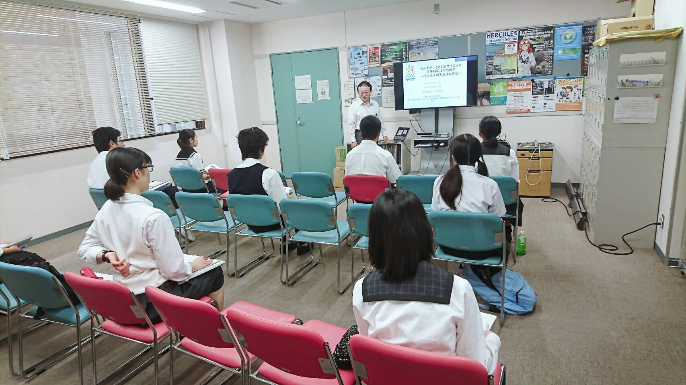
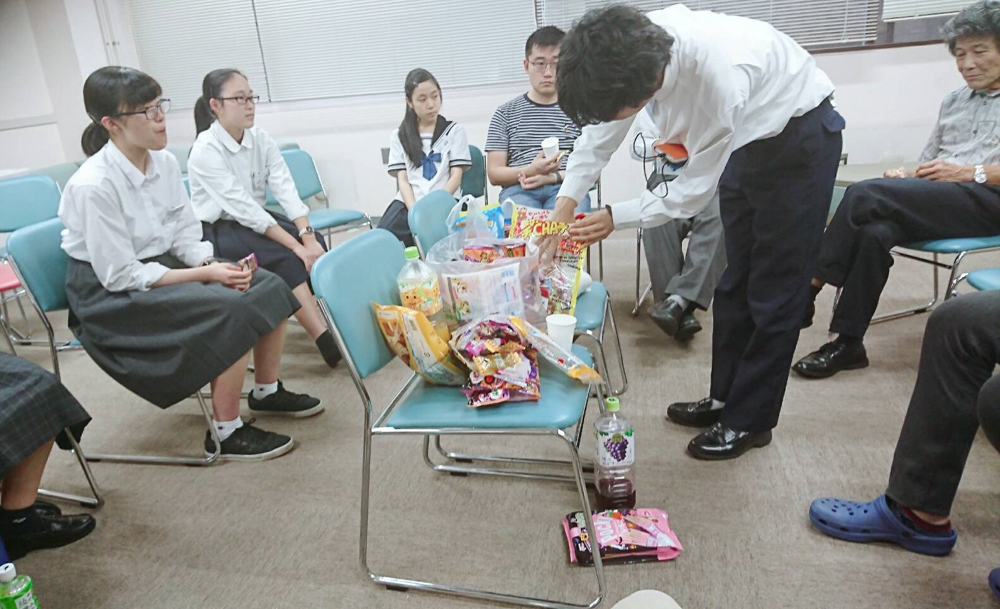
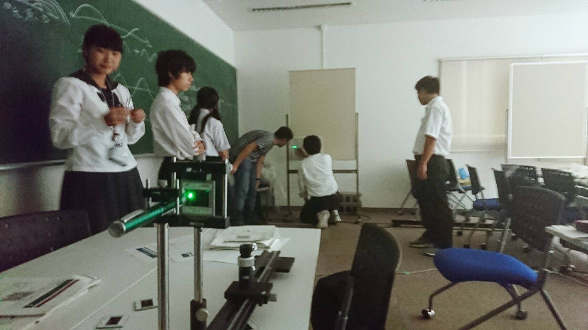
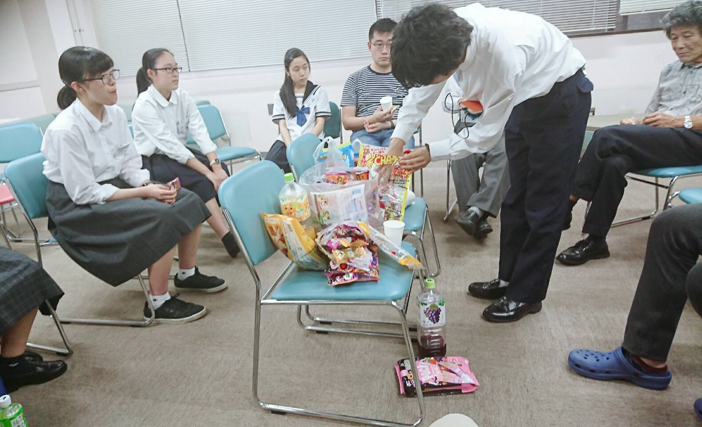
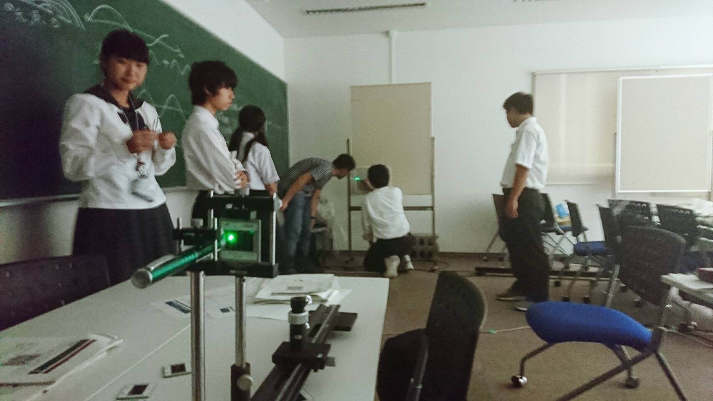
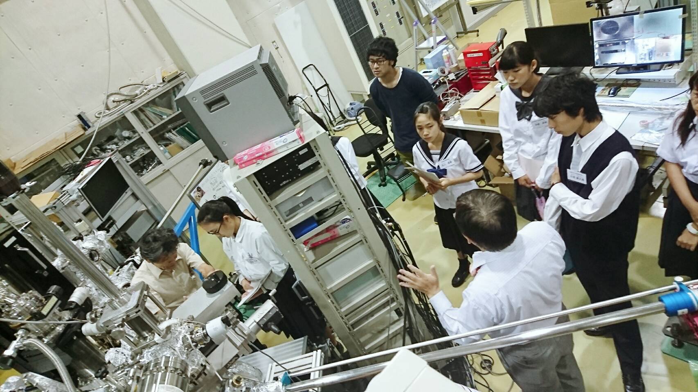
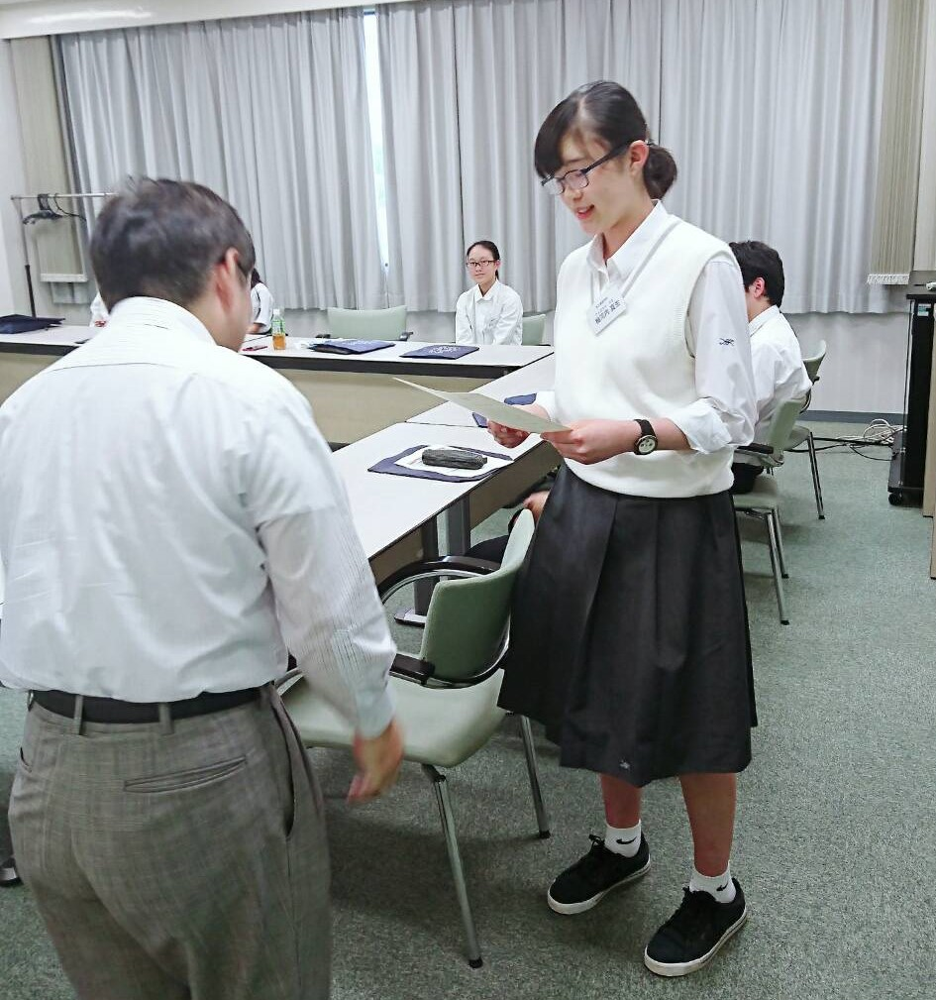
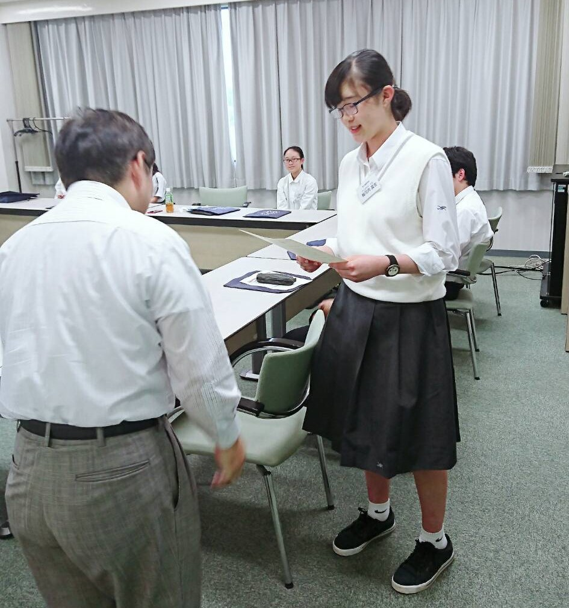
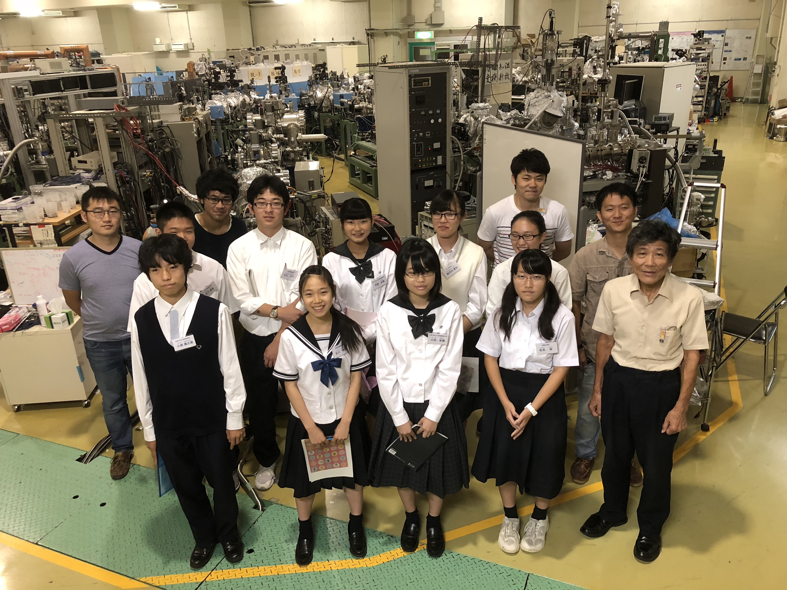

日本学術振興会による事業「ひらめき☆ときめきサイエンス」
日本学術振興会が研究と社会との連携の推進のために行う事業の一つである、「ひらめき☆ときめきサイエンス〜ようこそ大学の研究室へ〜KAKENHI」を、広島大学放射光科学研究センターにて開催いたしました。
この事業は、「大学や研究機関で『科研費』（KAKENHI）により行われている最先端の研究成果に、小学５・６年生、中学生、高校生の皆さんが、直に見る、聞く、触れることで、科学のおもしろさを感じてもらうプログラム」です。*1
今回は広島各地から集まった9人の高校生を対象に、「量子科学の世界-光と電子の不思議な性質-」と題して行われました。
また、当研究室からはD1宮下剛夫とM2市川典万が、ティーチング・アシスタントとして参加しました。
１日目は、朝から生天目博文教授が、高校生にひらめき☆ときめきサイエンスの趣旨や、放射光や量子に関する説明を行いました。
その後ティーチング・アシスタントが手分けして、高校生を放射光施設HiSORの案内をし、代表的な研究や、最新の実験装置の説明を行いました。
昼食をはさみ、ティーチング・アシスタントが、４つのテーマに分かれた実験（磁性、光、液体窒素、高温超伝導に関するもの）をし、日常生活で見れないような物理現象を演示しました。 その現象が起こる原因や、それがどのようなことに応用できるかなどを高校生に教え、また一緒に考えました。
頭を使ったところで、アイスブレイクも兼ねた話合いをしました。 お菓子をつまみつつ、勉強や研究、大学生活に関する高校生からの質問に答えたり、高校生活での悩み相談をして親睦を深めました。
１日目の締めくくりとして、「比電荷測定の実験」と、「ヤングの実験」を、高校生が中心となって行いました。 前者が「電子の粒子性」、後者が「光の波動性」という、量子を語る上で重要な物性を立証する実験です。 また、現象の原因や、現象を理解する上で必要でかつまだ高校で習っていない数学を、ティーチング・アシスタントや先生が説明しました。
１日目は、朝から生天目博文教授が、高校生にひらめき☆ときめきサイエンスの趣旨や、放射光や量子に関する説明を行いました。
その後ティーチング・アシスタントが手分けして、高校生を放射光施設HiSORの案内をし、代表的な研究や、最新の実験装置の説明を行いました。
昼食をはさみ、ティーチング・アシスタントが、４つのテーマに分かれた実験（磁性、光、液体窒素、高温超伝導に関するもの）をし、日常生活で見れないような物理現象を演示しました。 その現象が起こる原因や、それがどのようなことに応用できるかなどを高校生に教え、また一緒に考えました。
頭を使ったところで、アイスブレイクも兼ねた話合いをしました。 お菓子をつまみつつ、勉強や研究、大学生活に関する高校生からの質問に答えたり、高校生活での悩み相談をして親睦を深めました。
１日目の締めくくりとして、「比電荷測定の実験」と、「ヤングの実験」を、高校生が中心となって行いました。 前者が「電子の粒子性」、後者が「光の波動性」という、量子を語る上で重要な物性を立証する実験です。 また、現象の原因や、現象を理解する上で必要でかつまだ高校で習っていない数学を、ティーチング・アシスタントや先生が説明しました。

生天目博文教授によるひらめき☆ときめきサイエンスの説明。
お菓子を食べながらちょっと休憩。
ヤングの実験。
※光を見るために部屋を暗くする必要があったため、写真が少し見づらいです。すみません。


※光を見るために部屋を暗くする必要があったため、写真が少し見づらいです。すみません。
実験にも慣れてきたところで、２日目の朝からは「フォトン・カウンティングの実験」と、「低速電子回折の実験」を行いました。
前者が「光の粒子性」、後者が「電子の波動性」を立証するもので、１日目の実験と合わせることで、量子の持つ「粒子と波動の二重性」を目の当たりにし、理解できる仕組みになっています。
昼からは、マイクロンテクノロジー社の見学に行きました。 マイクロンテクノロジーは、「最先端技術で世界をリードする半導体メモリーメーカー」です。*2 最新の機械が大量に置かれたクリーンルームのツアーは、高校生だけではなく、先生や我々ティーチング・アシスタントにとってもとても刺激的で、大変勉強になりました。
最後に高校生に今回のひらめき☆ときめきサイエンスに関するアンケートをとった後、未来博士号と称した修了証を授与しました。
昼からは、マイクロンテクノロジー社の見学に行きました。 マイクロンテクノロジーは、「最先端技術で世界をリードする半導体メモリーメーカー」です。*2 最新の機械が大量に置かれたクリーンルームのツアーは、高校生だけではなく、先生や我々ティーチング・アシスタントにとってもとても刺激的で、大変勉強になりました。
最後に高校生に今回のひらめき☆ときめきサイエンスに関するアンケートをとった後、未来博士号と称した修了証を授与しました。

低速電子回折の実験。
HiSORのBL7に設置されているLEED装置を用いました。

マイクロンテクノロジー社での見学。
最先端技術を用いて半導体部品が作られるところを目の当たりにしました。
未来博士号（修了証）の授与。
２日間おつかれさまでした。
HiSORのBL7に設置されているLEED装置を用いました。
最先端技術を用いて半導体部品が作られるところを目の当たりにしました。

２日間おつかれさまでした。
今回の２日間が、高校生に対して良い刺激になり、科学をさらに好きになるきっかけになってくれたらとても嬉しいですね。
また我々ティーチング・アシスタントにとっても、演示実験をしたり教えたりすることが出来て、自身の研究に対するモチベーションも上がり、本当に良い機会となりました。

HiSOR実験ホール内での記念写真
執筆：宮下剛夫